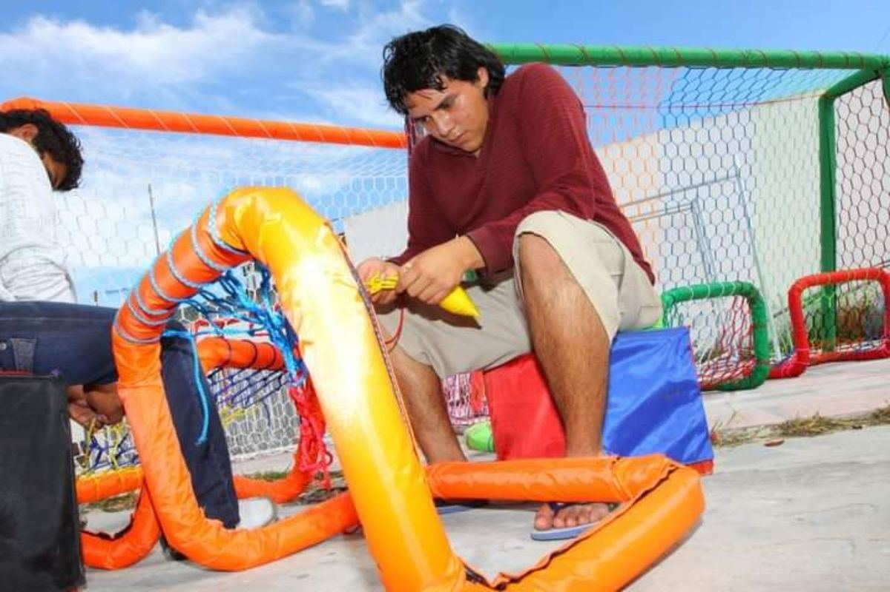
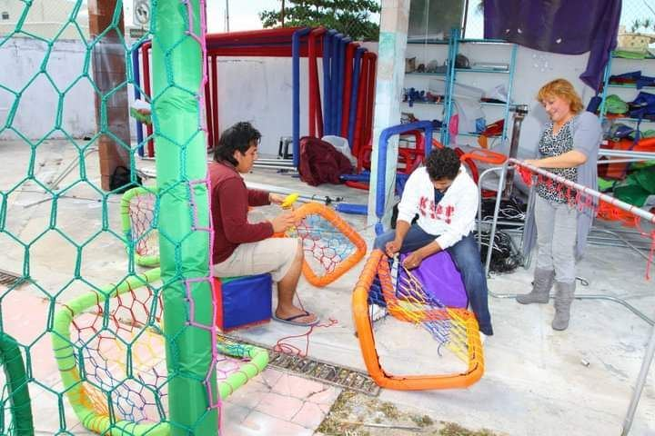
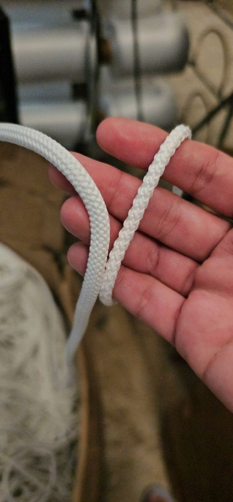

Redes para porterías de fútbol a la medida
Red tipo colmena tejida a mano con cordón de poliéster de alta tenacidad. La hacemos a la medida exacta de tu portería.
Hexágono10 × 10 cm
Poliéster60 filamentos
A la medidaDe tu portería

Red tipo colmena tejida a mano con cordón de poliéster de alta tenacidad. La hacemos a la medida exacta de tu portería.
Tejemos cada red de forma artesanal con cordón trenzado de poliéster 100 % de alta tenacidad. Los nudos están diseñados para amortiguar el impacto del balón y la orilla va reforzada.
Es muy resistente a la tracción y al roce, y aguanta el sol y la lluvia.

Si tu red ya se rompió o se quemó con el sol, la cambiamos por una a la medida.

Redes para porterías de medida oficial.

Canchas de renta y ligas, donde la red trabaja todos los días.

Redes para porterías pequeñas y de entrenamiento.

Tejemos en los colores que tengamos disponibles para tu equipo.
| Material | Cordón de poliéster 100 % de alta tenacidad, trenzado de 60 filamentos (4 mm) |
| Tejido | Tipo colmena (hexagonal), artesanal, con nudos firmes |
| Hexágono | 10 cm de alto × 10 cm de ancho |
| Orilla | Reforzada |
| Color | Blanco; otros colores según disponibilidad |
| Medidas | A la medida de tu portería |
| También en rombo | Red de rombo de nylon alquitranado negro de 1" o 4", la misma de nuestras redes perimetrales |
Mide tu portería y mándanos estos datos por WhatsApp. Si nos mandas una foto, mejor.
El ancho de la portería, de poste a poste.
La altura, del suelo al travesaño.
Qué tanto entra la red hacia atrás en la parte de arriba.
Qué tanto entra la red hacia atrás en el suelo.
Dinos también cuántas redes necesitas, el color y tu ciudad para cotizar el envío.



Cuatro: travesaño (ancho), poste (alto), profundidad superior y profundidad inferior. Con eso la tejemos a la medida exacta.
De cordón de poliéster 100 % de alta tenacidad, trenzado de 60 filamentos, tejido en hexágono tipo colmena de 10 × 10 cm.
Sí, según los colores de cordón que tengamos disponibles. La más común es blanca.
Vendemos la red sola. Si también necesitas la estructura, ve nuestras porterías.
También hacemos redes de portería en rombo de nylon alquitranado negro, de 1" o 4". Pregúntanos por ellas al cotizar.